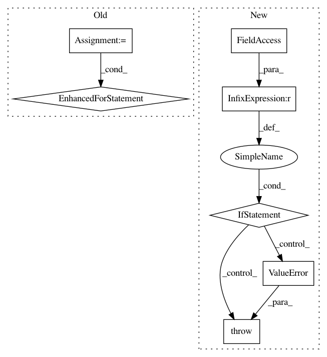

5fadb9c18e3de16cc5633175199f9e9e2c381102,rl_coach/graph_managers/graph_manager.py,GraphManager,restore_checkpoint,#GraphManager#,493
Before Change
checkpoint = tf.train.get_checkpoint_state(checkpoint_dir)
screen.log_title("Loading checkpoint: {}".format(checkpoint.model_checkpoint_path))
variables = {}
for var_name, _ in tf.contrib.framework.list_variables(checkpoint_dir):
// Load the variable
var = tf.contrib.framework.load_variable(checkpoint_dir, var_name)
// Set the new name
new_name = var_name
new_name = new_name.replace("global/", "online/")
variables[new_name] = var
for v in self.variables_to_restore:
self.sess.run(v.assign(variables[v.name.split(":")[0]]))
def occasionally_save_checkpoint(self):
After Change
// TODO: find better way to load checkpoints that were saved with a global network into the online network
if hasattr(self.task_parameters, "checkpoint_restore_dir") and self.task_parameters.checkpoint_restore_dir:
if self.task_parameters.framework_type == Frameworks.tensorflow:
self._restore_checkpoint_tf(self.task_parameters.checkpoint_restore_dir)
elif self.task_parameters.framework_type == Frameworks.mxnet:
// TODO implement checkpoint restore
pass
else:
raise ValueError("Invalid framework {}".format(self.task_parameters.framework_type))
def occasionally_save_checkpoint(self):
// only the chief process saves checkpoints
if self.task_parameters.checkpoint_save_secs \
and time.time() - self.last_checkpoint_saving_time >= self.task_parameters.checkpoint_save_secs \
In pattern: SUPERPATTERN
Frequency: 3
Non-data size: 7
Instances
Project Name: NervanaSystems/coach
Commit Name: 5fadb9c18e3de16cc5633175199f9e9e2c381102
Time: 2018-11-07
Author: sina.beh@gmail.com
File Name: rl_coach/graph_managers/graph_manager.py
Class Name: GraphManager
Method Name: restore_checkpoint
Project Name: GPflow/GPflow
Commit Name: 0d97bc0bb3db40017f1278d6c1f292ea0f789ab0
Time: 2020-03-27
Author: art.art.v@gmail.com
File Name: gpflow/optimizers/mcmc.py
Class Name: SamplingHelper
Method Name: __init__
Project Name: maciejkula/spotlight
Commit Name: eef158f03c4ec9bf872a3e358d62a1fd21a73c35
Time: 2017-07-13
Author: maciej.kula@gmail.com
File Name: examples/movielens_cnn.py
Class Name:
Method Name: